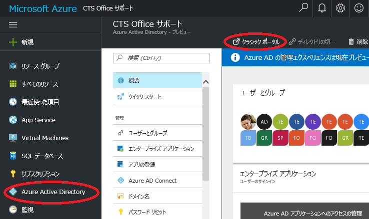
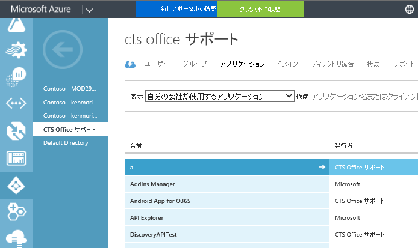
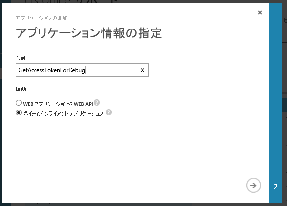
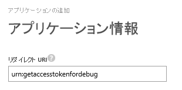
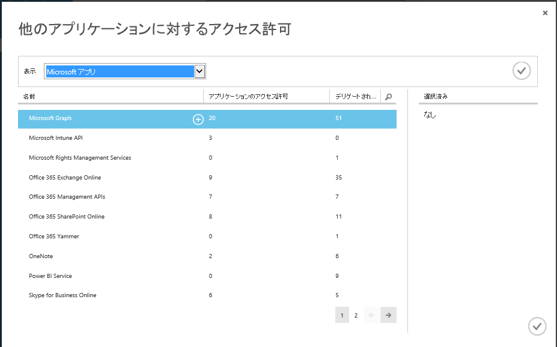
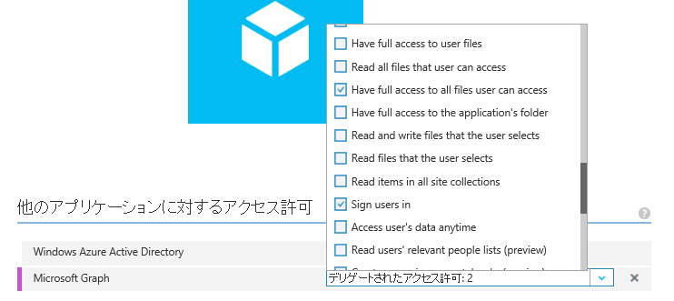
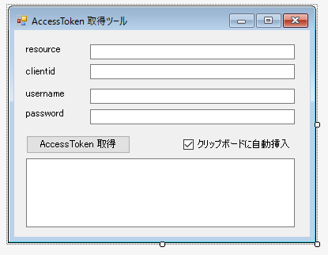
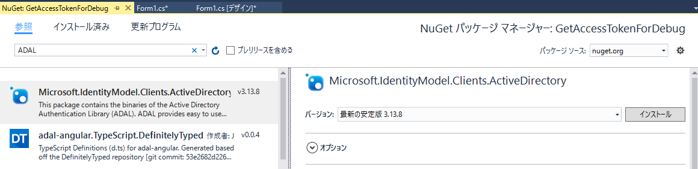
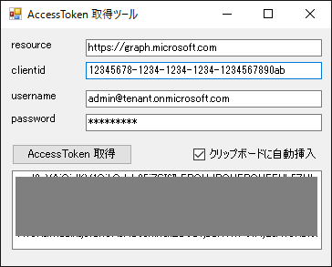

(※ 2016 年 12 月 13 日に Japan Office Developer Support Blog に公開した情報のアーカイブです。)
こんにちは、Office Developer サポートの森 健吾 (kenmori) です。
今回の投稿では、Access Token を取得する簡単なツールの作成方法をご紹介します。
開発およびデバッグを進める上で、以下のように Azure AD にアプリケーションを登録し、ADAL (ライブラリ) を使用した C# アプリケーションを開発しておくことで、アクセス トークンを常に取得できる状況にしておくと便利だと思います。
今回ご紹介する方法は、たくさんあるうちの 1 つの方法ですが、この手法に慣れていない方を対象に可能な限り簡略化した手順にさせていただきましたので、是非ご参考にしてください。
1. Azure Portal 側の操作
1) Azure Portal (https://portal.azure.com) にアクセスします。
2) Azure Active Directory は、2016/12/12 時点でプレビュー版なのでクラシック ポータルに移動します。
※ プレビューが解除されたら、新ポータルでそのまま操作ください。

3) [Azure Active Directory] – [<テナント名>] – [アプリケーション]と遷移します。

4) [追加] をクリックします。
5) [組織で開発中のアプリケーションを追加] をクリックします。
6) 任意の名前を指定し、”ネイティブ クライアント アプリケーション” を選択して、右矢印をクリックします。

7) リダイレクト URI に任意の値を指定します。

8) [完了] をクリックします。
9) できあがったアプリケーションが開かれるので [構成] をクリックします。
10) 画面下にスクロールし、”他のアプリケーションに対するアクセス許可” にて、[アプリケーションの追加] をクリックします。
11) 今回開発する Access Token 取得用アプリケーションに取得させたいアプリケーション アクセス許可を選びます。
11-1) Microsoft Graph の右の (+) アイコンをクリックしてチェックアイコンをクリックします。

11-2) デリゲートされたアクセス許可をクリックし、以下のような内容をチェックします。
例.
・Have full access to all files user can access (任意)
・Sign users in (必須)

(※自身のデバッグ用のアプリなので、便宜上大量にチェックしても問題ないと思います。)
12) 画面下の [保存] をクリックします。
13) 画面上にスクロールして、クライアント ID の右のコピー ボタンをクリックし、クライアント ID をクリップ ボードに取得し、控えておきます。クライアント ID の形式は xxxxxxxx-xxxx-xxxx-xxxx-xxxxxxxxxxxx のような形式です。
2. Visual Studio 側の操作
1) Visual Studio を起動し、Windows フォーム アプリケーションを開始します。
2) 以下のような入力コントロールを配置します。

3) ソリューション エクスプローラーより [参照] を右クリックして、NuGet パッケージの管理をクリックします。
4) ADAL を検索して、[インストール] をクリックします。

5) ダイアログが表示されたら、[OK] や [同意する] などを適宜クリックします。
6) Form.cs などをダブルクリックして、ボタンをダブルクリックし、コード ビューに遷移します。
7) 以下のようなコードを実装します。
1 | using Microsoft.IdentityModel.Clients.ActiveDirectory; |
8) アプリケーションを実行します。

9) AccessToken が取得できることを確認します。
ここで取得した Access Token を Fiddler などで、Microsoft Graph などを試す際にご使用ください。
今回の投稿は以上となります。
本情報の内容 (添付文書、リンク先などを含む) は、作成日時点でのものであり、予告なく変更される場合があります。